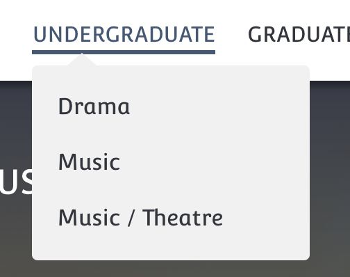
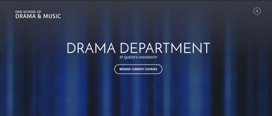
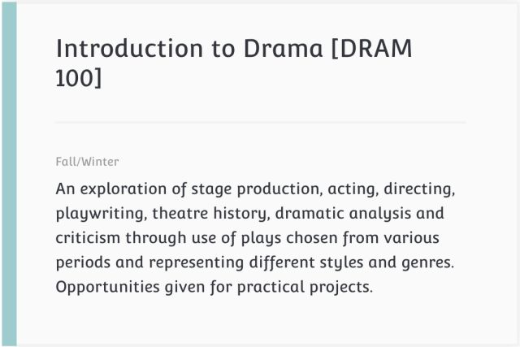
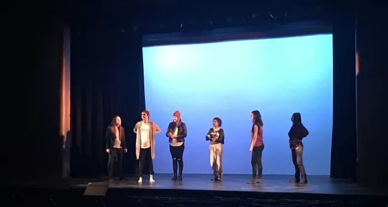
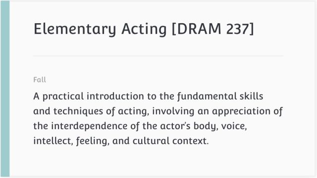
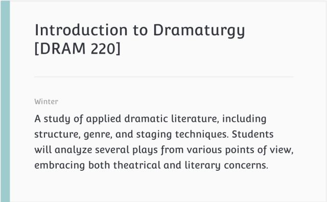
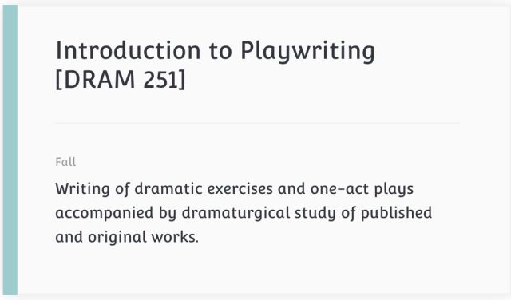
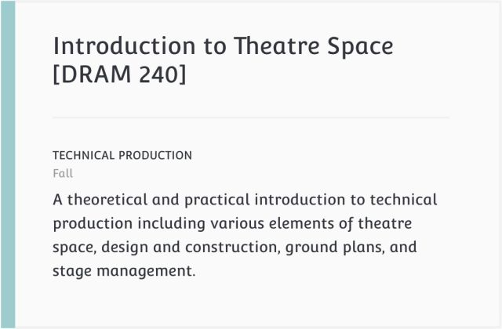
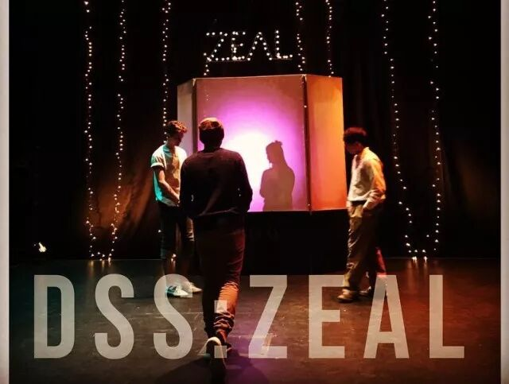

I regard the theatre as the greatest of all art forms, the most immediate way in which a human being can share with another the sense of what it is to be a human being.
——Oscar Wilde
任何Drama 100的同学都会很熟悉上面的那句话：
“我认为戏剧是最伟大的艺术形式，
它是一个人能够与别人分享关于人之为人感受的
最直接的方式。”
这是来自爱尔兰文学家王尔德对戏剧的看法
每年的Drama 100第一节课上
教授都会骄傲地把这句话告诉我们
今天这个推文，
就将为大家揭秘皇后最戏精的专业
Drama！
Queen's Dan School of
Drama & Music
学院里有三大部门

很好理解嘛
Music 和 Theatre 的组合
就是音乐剧
三个Program
今天我们要讲的就是Drama Department！

今天就是课程简介！
课程尝鲜
戏剧入门
DRAM 100

这是Drama给大一的同学们准备的课，
内容更多是对所有戏剧内容的大致探索。
分享给你戏剧欣赏的经验，
告诉你戏剧发展的基本历史，
和你分享一出舞台剧是经过怎样的过程产生的，
编剧的任务、导演的任务、Dramaturge的任务
演员的任务，他们到底在做什么
还告诉了你戏剧和其他艺术的不同。
为什么要坚守戏剧，
为什么它拥有无穷的魅力以至于
几千年来，戏剧依然是一门高雅美好的艺术。
它的欣赏门槛究竟存不存在，
它在未来是否会被淘汰。
在这门课里，你会受到启迪，对舞台艺术，
对人与人交流的方式，对艺术的存在形式：
戏剧，是美，是短暂的永恒。
这是一门整整一个学年的课程，
分为DRAM 100A和DRAM 100B。
只有该科成绩达到 B 及以上你才能Major Drama
课程鲜度：☆☆☆☆
1、课程要求读7-8本剧本和若干材料；
2、上下学期分别要完成两份大的Essay，上学期是Dramaturgy的，下学期关于Scenography的；
3、下学期的DRAM 100 Lab会要求出一部短剧，灯光服装声音，编剧导演演员，每个职位你都有机会初次尝试！
4、这也是很多其他专业的同学凑选修学分的课！

Lab Presentation 之前的对光现场
表演
DRAM 237

专业里最基础的表演课！
从学会呼吸，学会放松肢体，感受你的身体开始
慢慢再教你如何感受，如何理解台词。
教授Greg还会带你塑造一个人物，从无到有
你会想象那个人物的前半生，他所经历的一切
他的样子，他的声音，他的姿态、神态、习惯
没有表演是超越人物的，
当你表现另一个人物的时候，你必须依靠你的身体
如何更好更灵活运用你的身体，
将会是这门课带你探索的目标。
课程鲜度：☆☆☆☆☆
1、课程很轻松！只要用心完成每一次作业，拿A不再是梦想！
2、有很多训练给你自由发挥的空间，你完全可以打开戏精模式，大开脑洞！
3、这是一学期（秋季冬季名字不一样）的课程，大内容包括“一个人物的塑造”和“一个场景的展现”。
4、要求看剧院的指定剧目演出，并且以此来完成一份essay。
小编最后一次汇报演出时的道具
剧作分析
DRAM 220

这是一门非常有意思的课！
Dramaturgy是一项技能，可以说
在一出剧目的准备过程中，
没有一个职位是不需要这项技能的。
中文翻译为：“拟剧论”或者是“编剧法”
其实简单来说就像是，对剧作的“阅读理解”。
不仅仅是细到一句台词的背后的潜台词，
或者是大到整个剧本的创作年代和历史背景；
可以具体到一个动作的含义，
也可以抽象到剧本中关于哲学的元素。
只有通过完整有效的剧作分析，
你在完成戏剧任务的时候才能不背离剧本，
才能抓住核心。
实用，并且有趣。
小故事：
有一天，一对情侣在课上直接吵起来了，
他们先后吵着离开了教室，
连教授Jenn都站在一旁不敢说话。
大家都惊呆了！
直到后来才知道，这是Jenn故意安排的！
为了让我们明白：
戏剧现实和现实的界限是模棱两可的。
当场就有学生表示差点被吓出心脏病！LOL
课程鲜度：☆☆☆☆
1、课程要求读10+的剧本；
2、基本上每周都有assignment，字数300到1500不等；
3、如果你不读剧本就去上课，当教授拿那些必读剧本举例子的时候你就会一脸懵逼！
一幅尝试解释Dramaturgy作用的漫画
编剧
DRAM 251

皇后drama，
eat and chat的代表。
教会你现如今流行并且非常实用的编剧方法，
有非常大量的presentation，
与别人分享自己的编剧故事。
每学期会要求出一部30到50页的剧本。
教授John对第一语言不是英语的同学很好，
会主动提出修改语法错误，
他还不止一次说，没什么好shy的，
毕竟他一点Mandarin都不会。
课程鲜度：☆☆☆
1、整个学期的目标一致；
2、每隔几周都有assignment或者exercise，都是非常有趣的编剧小任务！
3、没有onQ page！千万别忘了查邮件！
舞台技术
DRAM 240

舞台技术给给了梦境实现的可能性。
这是一门偏实践类的课程：
Adair Redish作为这类实践课的领头者
会带领着大家走进剧院，
体验灯光、声音、舞台布置 服装等
给戏剧带来的影响。
在了解的同时，
也会给你剧本让你设计舞台，
你需要以此画出设计草图
除了这些他还会教你如何做一个stage manager
也给喜欢design的同学们的一个平台
课程鲜度：☆☆☆☆
1、一学期一共3-4个assignments 没有test midterm 或者 final

DSS 冬季话剧 Zeal，Isable Studio
还有非常有趣的暑期课程：Dram 271 & 273
中世纪戏剧文学和表演！就在英国的Queen‘s城堡！
英语和历史专业的同学
都能从这个戏剧课程中拿到学分！
详细信息欢迎点击 阅读原文 了解！
Queen's Drama一直在努力为校园提供
丰富有趣的剧目
来为大家的课余生活带来别样的色彩！
戏精的存在就是为了让大家能够拥有精彩的每一天！
今天的课程介绍就到这里，
但是关于戏剧学院的秘密可多得是！
我们还会在接下来的几周推出更多专业相关的推文，
敬请大家关注！
文字 / 王子翊
感谢 / 万美杉
编辑 / 王子翊
校对 / 王子奇、楚晗
全年赞助 / Tian Bao Travel